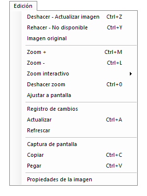
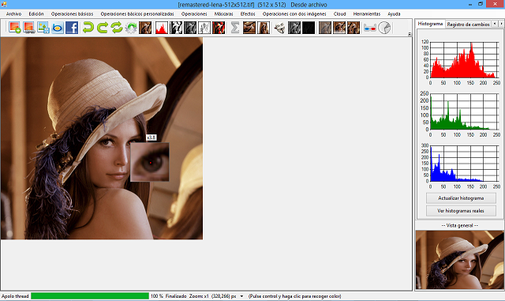

Segundo elemento de la barra superior. A continuación se muestra una imagen del menú.

Ilustración 1. Menú edición.


Con esta opción se retrocede a la anterior imagen modificada. Además, muestra información de qué modificación se va a deshacer.

Ilustración 2. Deshacer escala de grises.

Como se puede observar en la imagen anterior, el proceso que se va a deshacer es una transformación en escala de grises.
Con esta opción se avanza a la siguiente imagen modificada en caso de haber retrocedido previamente. Además, muestra información de qué modificación se va a rehacer.

Ilustración 3. Rehacer blanco y negro.

Como se puede observar en la imagen anterior, el proceso que se va a rehacer es una transformación en blanco y negro.
Se muestra la imagen actual sin ninguna transformación, es decir, la imagen actual es mostrada como cuando se abrió por primera vez. La forma para abrir imágenes puede ser, desde archivo, desde BING, como recurso web o desde Facebook.
Se amplía en un 10% el tamaño de la imagen mostrada en ese momento.
Se disminuye en un 10% el tamaño de la imagen mostrada en ese momento. Hasta un mínimo máximo permitido. En caso de llegar al mínimo se mostrada un diálogo informando de ello.

Ilustración 4. Zoom mínimo superado.

Se disgrega en dos opciones, empezar y propiedades. En la opción empezar, se muestra una cuadro de diálogo informando de cómo utilizar esta opción. El proceso para usar es sencillo, simplemente se debe mantener pulsada la tecla SHIFT mientras se desplaza el cursor por la imagen. En ese momento se mostrará un recuadro adicional al lado del puntero con el fragmento de la imagen ampliada. Además, mientras se mantiene pulsada la tecla SHIFT, si se da vueltas a la rueda del ratón se aumenta o disminuye el nivel de zoom.

Ilustración 5. Zoom interactivo.


Si se pulsa la opción propiedades, se muestra un cuadro de diálogo con las siguientes posibilidades:
Devuelve la imagen a su estado de zoom original (x1).
Aumenta el ancho y alto de la imagen para que se ajuste a la zona del programa donde se muestra la imagen.

Ilustración 6. Ajustar a pantalla.

Como se puede observar en la imagen anterior, la fotografía de Lena ahora ocupa toda la zona principal del programa.
Si se hace clic en esta opción (Registro cambios), se puede observar todo el progreso de cambios en la imagen, además de una pequeña información de qué o cuál ha sido el cambio aplicado a la imagen. Si se pulsa en cualquiera de las imágenes mostradas en el registro, automáticamente pasa a ser la imagen actual en nuestro programa principal. Para que se actualicen los cambios, simplemente hace falta cerrar y volver a abrir la ventana.

Ilustración 7. Registro de cambios.

Al pulsar esta opción, hace que la imagen mostrada actualmente en Apolo sea la primera del registro de imágenes. Imagínese que está retrocediendo su imagen a un estado anterior (deshacer) y quiere que la imagen actual pase a ser la primera en el orden de rehacer/deshacer, simplemente pulsando actualizar imagen pasará a serlo. Además, se actualizan los histogramas laterales.
Actualiza el tamaño y posición de los scrolls verticales y horizontales de la imagen. En caso de cualquier fallo con los scrolls, pulsando esta opción se volverá a calcular su valor y a mostrarse en pantalla.
Crea una captura de pantalla del estado actual, y la asigna al programa principal.
Hace que la imagen actual de Apolo pase al portapapeles de Windows.
Al seleccionar esta opción, si existe alguna imagen en el portapapeles de Windows, pasará a ser la imagen actual de Apolo.
Muestra un formulario con dos pestañas con toda la información disponible de la imagen.
En la primera pestaña (General) se muestra la siguiente información:
Nombre de la imagen, tamaño en píxeles, tamaño en pulgadas, resolución, obtención imagen, formato de la imagen, número de píxeles, perfil de color.

Ilustración 8. Propiedades de la imagen. General.

En la pestaña Histogramas, se muestra el histograma rojo/verde/azul de la miniatura de la imagen. En caso de querer visualizar los histogramas completos, basta con hacer clic en cualquiera de ellos.

Ilustración 9. Propiedades de la imagen. Histogramas.

Created with the Personal Edition of HelpNDoc: Free help authoring tool